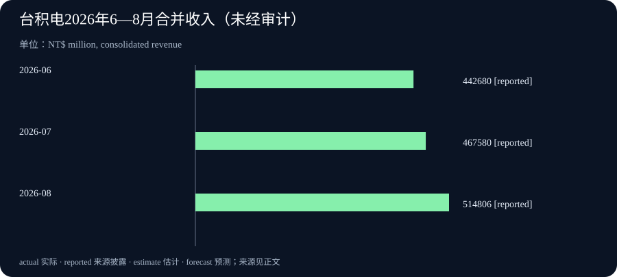

Daily Intelligence
2026-09-14 · Monday · 上海时间上午版。资料于今日重新打开核对：本期聚焦 9 月 11 日 AI 编排产品公告、9 月 10 日台积电月度营收披露及本周央行日程，不把此前发布的资料伪装成今日新公告。与 13 日的研究目的及产业合作主题不同，本期讨论完整任务成本、收入口径与决策时序。
Today’s Thesis｜智能的单价，与完成一件事的成本不是一回事
AI 编排产品尝试在能力与成本之间寻找更好的组合，半导体制造收入则展示了产业链另一端的实际交易规模。本刊判断，两者可以同时增长：单项任务效率提高，并不能直接推出全行业计算需求下降；营收增长也不能自动证明终端应用已经盈利。进入政策会议周，应把技术效率、商业兑现和资金条件分层观察，不把它们压缩成同一个乐观或悲观叙事。
Executive Summary｜执行摘要
- Sakana AI 发布 Fugu Max 与 Fugu Ultra v2，前者主打成本效率，后者侧重复杂任务能力。公布的测试结果属于厂商评估，不能直接替代用户工作流验证。9 月 11 日公告
- 台积电 8 月合并营收同比增长 53.3%、环比增长 10.1%；这是公司总体收入变化，不是 AI 业务收入增速，也不是利润增速。9 月 10 日披露
- 美联储日历列出 9 月 15—16 日会议，附带经济预测摘要；今日尚无这次会议的决议，不能将市场预期当成政策已经改变。官方日程
- 本周最值得跟踪的是完整任务的成功成本、制造端增长的后续可持续性，以及新政策信息是否改变已有判断。没有观察到的数据不以猜测补齐。
AI Daily｜Fugu 的新版本：把“选谁来做”也纳入模型能力
Sakana AI 在 9 月 11 日公告中介绍两个同源编排配置：Fugu Max 以成本效率为目标，Fugu Ultra v2 面向更高难度的多步骤任务。公告称新版本已经可用，并展示多个基准比较；这些是供应方披露，本刊没有调用服务或复现实验。尤其其中包含内部基准，跨产品比较应保留测试条件和评价者身份。发布说明
本刊技术分析：编排的潜在价值不只在于把多个回答投票，而在于把不同问题送到合适的处理路径。简单查找、结构化提取、复杂推理和结果核验，未必需要相同的模型与计算强度。但路由本身也会出错：若把难题误判为简单题，节省的计算可能被后续返工吞掉；若把每个问题都升级，理论节约则难以兑现。
因此，评估时至少需要同时固定任务集、质量标准和成本边界。不能拿一个系统的每百万输入 token 标价，与另一个系统的完整任务账单直接比较。任务可能消耗输出、重试、检索、工具执行和人工复核；便宜的单次调用也可能反复运行才能达标。这里是评估原则，不是对本次产品实际成本的估算。
另一个重要问题是错误是否独立。多个模型面对同一份错误材料，可能以不同表述重复相同结论；一致意见并不自然等于多份独立证据。对于关键判断，外部事实、确定性检查或专业审核仍然有价值。编排应被理解为一种可测试的系统设计，而不是天然免于幻觉或供应中断的保证。
企业试点可以先选择一类低风险任务，保留原先单模型方法作基线，逐项比较成功率、端到端耗时、人工修订量与完整开销。遇到困难案例时记录为什么升级、升级后是否解决，而不是只统计路由次数。只有任务层面的结果改善，才支持扩大部署；本期不据厂商公告建议购买任何服务。
Business Daily｜台积电月度收入很强，但不要从收入跨越到终端回报
台积电提交的 6-K 中，8 月收入表列为 514,806 百万新台币，即按表内口径约 5,148.06 亿新台币；1—8 月累计同比增长 39.3%。月度页面注明 2026 年数字未经审计。该披露没有提供可据以拆分当月 AI 收入或利润的明细，本期不为增长强行指定唯一原因。公司提交文件 月度表及说明
本刊商业分析：收入可以由销量、产品结构、价格和汇率等因素共同影响，识别驱动因素需要更多分项证据。制造端收入增长是值得关注的事实，但距离应用端客户能否持续付费，还有商业模式、使用强度和运行成本等多个环节。供应商收入与客户投资回报属于不同主体，不能直接画等号。
同样，收入不是自由现金流。扩大生产可能需要设备、厂房、人员和营运资金，具体利润和现金转换应回到完整财务披露核对。月度数据适合检查业务方向和节奏，不适合单独替代季度经营质量分析。这里没有补填本月利润率，也没有推算未披露的订单或产能利用率。
对产业观察者，一种更稳妥的方法是把链条分开：制造商确认了多少收入，基础设施买方形成了多少可用服务，应用公司获得了多少真实使用，最终客户节省了多少时间或增加了多少产出。每一层都需要自己的证据。某一层加速，既可能带动其他层，也可能暂时拉大投入与兑现之间的时间差。
后续应关注增长是否跨月延续，以及公司在完整财报中如何解释业务结构，而不是仅凭一个月的同比数值外推全年。同比受到去年基数影响，环比则可能受到交付节奏影响，两者回答不同问题。将它们并列有助于识别节奏，但不会自动消除季节性或构成预测模型。
Macro Observation｜会议周的第一条纪律：先分清日程、预期与决定
美联储官方日历显示，本次 FOMC 安排于 9 月 15—16 日，并与经济预测摘要相关联；页面最后更新时间为 8 月 19 日。今天确认的是日程，不是任何利率变动。本期不提供未经核实的概率、点阵图中位数或会议声明内容。FOMC 官方日历
本刊机制分析：政策信息可能同时影响融资成本、需求预期与风险偏好，但不同资产、公司和家庭不会受到完全相同的影响。已有固定利率债务与新融资的敏感度不同，短期现金流与远期收益的权重也不同。因此，不能用一个利率方向替代对实际合同、期限和资金需求的检查。
从经营角度看，等待重要信息不等于停止所有工作。可以先完成不依赖政策结果的准备，如核对债务到期时间、更新费用明细、划分可逆和不可逆投入。真正依赖新信息的判断则保留条件，等资料公布后逐项更新。这样既避免过早押注，也不会把不确定性变成无限期拖延的理由。
本周阅读政策材料时，应先看正式决定，再看对经济条件的描述，最后区分成员预测与政策承诺。不同文件有不同用途，不宜混成一个“央行保证”。以上为一般信息分析框架，不构成个性化投资建议；本期没有进行交易，也没有预测会议结果。
Signal Dashboard｜本周的四个观察层
| 层次 | 当前依据 | 不能直接推出 | 可验证的后续信号 |
|---|---|---|---|
| AI 系统 | Fugu 新版本与厂商测试 | 所有任务都更便宜或更可靠 | 同一工作流的成功成本 |
| 制造收入 | 台积电已披露月度收入 | 当月 AI 利润或客户回报 | 后续收入与完整分项解释 |
| 资金条件 | FOMC 会议日历 | 本次一定改变利率 | 正式决定及配套说明 |
| 企业采用 | 本刊提出的分层框架 | 基础设施增长等于应用盈利 | 持续付费与业务效果 |
前三行来源分别见上文公告、公司文件和官方日历；第四行没有填入推测的行业统计，而是说明需要补充哪类证据。
Deep Insight｜效率提升为什么可能与总支出增长并存
以下是本刊提出的情景分析，不是对 Fugu 产品、台积电订单或整个 AI 行业的实证结论。首先区分单次任务成本与全部任务总成本。总成本既受每次花费影响，也受任务数量、复杂程度和成功率影响。只有明确这些量的变化，才可能判断效率提升是否带来预算下降。看到单位价格变便宜，不能跳过其余变量直接下结论。
假设一个团队原来只自动处理少量标准问题，成本下降后开始处理更多长文档、更多客户场景和更多历史资料。即使每类任务的单位成本下降，总使用量也可能上升。反过来，如果需求本来固定、扩展权限受到限制，效率改善也可能直接减少开销。这两种路径都在逻辑上成立，哪一种发生需要实际使用记录，不能由产业叙事代替测量。
更难观察的变量是质量门槛。一个便宜但经常返工的系统，可能比价格较高却稳定达标的系统更贵。这里的“贵”应包含人的时间、等待、异常恢复和错误造成的影响，而不仅是模型账单。并非所有影响都适合换算成金额，重大风险可以保持为单独的停止条件，不必为了一个总分把安全边界折算掉。
再看产业链，应用侧单位成本下降与制造侧收入增长并不矛盾：前者描述某类任务的效率，后者描述另一主体在一定期间的交易规模。它们的时间窗口、货币单位和统计对象不同。没有需求量、产品结构及传导机制的证据，不能把同时出现的两个变化解释成因果关系，更不能据此推断某家公司未来收益。
对实际项目，更有用的是建立一个小型对照：选择定义明确且已获授权的任务，保留现有方案作为基线，在同样输入上测试新方案。记录通过率、完成时间、复核负担和资源使用，并保留失败样本。把任务按难度分组，可以发现改善来自简单任务还是复杂任务；把异常单独列出，可以避免平均值掩盖高影响失败。
还要防止过早优化。当工作目标尚未稳定，团队若只围绕当前成本最低的路径设计系统，可能失去适应新任务的空间。合理做法不是拒绝效率，而是先确认约束：什么必须正确，什么可以延期，什么可以替换，什么不允许自动执行。随后在这个边界内寻找更好的组合。这样，技术选择才服务于任务，而不是让任务迁就某个价格表。
本刊本周的核心观察是假设：最有价值的效率指标将从“模型单价”转向“在可接受风险内完成任务的完整代价”。若这一判断成立，采购和评估会更重视可复现样本、任务记录以及故障恢复，而不仅是排行榜。若实际业务完全标准化、输出可自动精确验证，单价仍可能占主导。判断必须允许这类反例，而不是把一个框架应用到所有情况。
Tomorrow Watch｜关注将发生的事件，而非提前写好的答案
9 月 15 日按官方日程进入 FOMC 会议窗口；本期不把会议首日写成决议已经公布。阅读后续消息时，要核对发布机构、当地日期与上海时间，避免因跨时区把尚未发生的事件提前归档。日历
产品方面，观察是否有披露条件充分的外部测试；企业方面，观察月度收入后是否有更细的经营说明。这两项没有已经核实的明日发布时间，因此只是跟踪方向。若没有新增一手材料，应明确“无新增”，不能把旧公告换个标题当新事实。
One Chart｜台积电近三个月合并收入

| 月份 | 收入，百万新台币 | 资料状态 |
|---|---|---|
| 2026-06 | 442,680 | 公司披露，未经审计 |
| 2026-07 | 467,580 | 公司披露，未经审计 |
| 2026-08 | 514,806 | 公司披露，未经审计 |
数据来自同一官方月度表，图表使用原表单位，不混入美元换算，也不将三个月水平值标成增长率。9 月栏尚无数值，本图没有把它填成零。该图显示收入方向，不能独自说明业务构成或利润变化。原始月度表
Quote of the Day｜先确定方向，再优化路径
“Optimization hinders evolution.”
— Alan J. Perlis
中文：优化会妨碍演化。
出处：耶鲁大学托管的《Epigrams in Programming》第 21 条，原文注明刊于 1982 年 9 月 SIGPLAN。原文
本刊解读：这是一句刻意简短的警句，不是“不要提高效率”的普遍定律。它提醒我们，当目标还会变化时，过度围绕当前方案优化，可能使未来调整更困难。
Action Items｜把一个抽象效率判断变成可检验问题
1. 选一类重复任务，把单次调用费用改记为完整任务费用，同时记录是否达标、返工和人工审核；暂不扩大权限或采购范围。 2. 检查本周用到的一项公司增长数据，明确主体、期间、货币、收入或利润口径，删去来源没有支持的原因归属。 3. 为会议周准备一个条件清单：哪些判断需等待正式资料，哪些准备现在就能做；新资料出现后更新，而非预写结果。